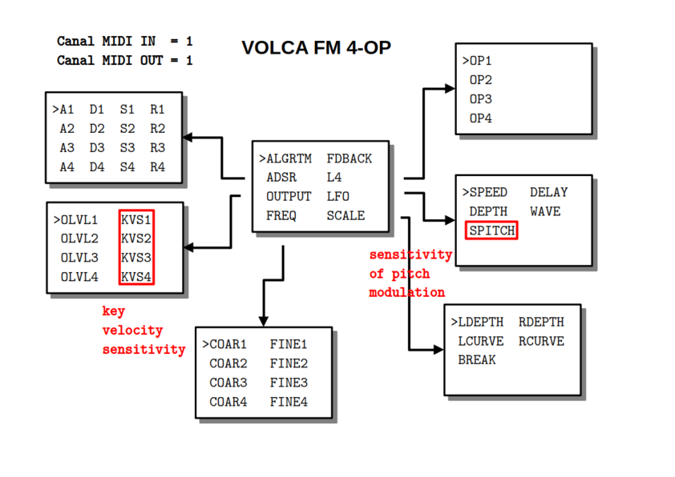
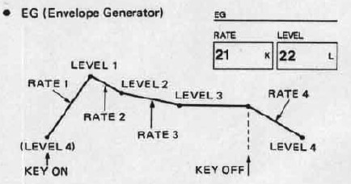

VOLCA_FM

PRÉSENTATION
Le code permet au module MIDI TOOLS de modifier, par NPRN, 48 des 156 paramètres du Volca FM sous firmware 1.09, réduit à 4-OP pour simplifier la maîtrise FM sur le modèle du Yamaha FB-01. Un contrôleur MIDI externe peut aussi être utilisé (CC1 à CC48).
MODE D’EMPLOI
À la mise sous tension, l’écran affiche pendant quelques secondes un message d’information finissant par le numéro de version :
SEND SYSEX TO
VOLCA FM 4-OP
BY CIYLAB
vx.y.z
Pour choisir les paramètres, il faut tourner l’encodeur PARAMETER au-dessus de l’écran.
ALGRTM FDBACK
ADSR L4
OUTPUT >LFO
FREQ SCALE
Ce même encodeur PARAMETER permet (sauf pour le choix de l’algorithme et du feedback) d’afficher la liste des paramètres par simple pression et de sélectionner le paramètre qu’on souhaite modifier.
>SPEED DELAY
DEPTH WAVE
SPITCH
Une nouvelle pression permet de revenir au menu principal.
Une fois le paramètre sélectionné, l’encodeur VALUE en dessous de l’écran permet d’en modifier la valeur. À noter qu’une rotation d’un seul cran de l’encodeur VALUE affiche la valeur sans la modifier. Une pression sur cet encodeur affiche le nom du paramètre.
Reboot : une pression longue sur l’encodeur PARAMETER redémarre le module.
Control Change : le module réagit aux messages CC dont le numéro est celui de l’un des 48 paramètres. Par exemple le CC 2 gère la quantité de feedback. Les changements de valeurs par les CC d’un contrôleur externe s’affichent en temps réel sur l’écran de la page concernant.
FDBACK
Le niveau de ré-insertion du signal. Provoque en général une saturation assimilable à du bruit.
ADSR
Cette page gère l’enveloppe pour chacun des 4 opérateurs :
- A plus la valeur est élevée pour l’attaque est rapide
- D règle la durée de la chute de l’attaque
- S règle le niveau de la tenue
- R règle la pente du relachement
Les valeurs par défaut sont 99, 99, 99 et 0.
Remarques
- une enveloppe de DX7 (volca FM) dépend de 8 paramètres.

Ici nous choissisons A = R1, D = R2, S = L3, R = R4, L2 = L3 et R3 = 0. Le volume minimal est L4 (paramètre de la page L4) initialisé au maximum pour un son tenue comme sur un synthétiseur analogique.
ALGRTM
Pour le choix de l’un des 8 algorithmes, le premier par défaut.
Correspondance des numéros d’algorithme
Les opérateurs 1 et 2 du volca sont désactivés. Voici le tableau des correspondances :
| FB-01 | volca FM |
|---|---|
| 1 | 1 |
| 2 | 14 |
| 3 | 8 |
| 4 | 7 |
| 5 | 5 |
| 6 | 22 |
| 7 | 31 |
| 8 | 32 |
Affichage oled
algorithme 1
4]
2-3
1
*
algorithme 2
4]
3-2
1
*
algorithme 3
4
3
1-2]
*
algorithme 4
4]
3
1-2
*
algorithme 5
2 4]
1 3
* *
algorithme 6
4]
1 2 3
* * *
algorithme 7
4]
1 2 3
* * *
algorithme 8
1 2 3 4]
* * * *
FREQ
Cette page gère le rapport des fréquences pour chaque opéateurs.
- COAR le rapport grossier (coarse) des fréquences de 0.5 à 31
- FINE le rapport fin (fine) des fréquences de 1 à 2
Les valeurs par défaut sont 1 et 0 : la note entendue est la note jouée.
Remarques
- lorsque COAR est 2 puissance n alors la note entendue est la note jouée à l’octave n.
-
la valeur de FINE est la note inférieure la plus proche suivant la formule:
note = ceil(12 * log(COAR * (1 + 0.01 * FINE)) / log(2)) % 12
L4
Cette page gère le niveau minimum du son avant et après l’application de l’enveloppe (paramètre L4 du DX7). La valeur 0 correspond au cas classique où le son n’est produit que pendant la durée de l’enveloppe. La valeur maximum de 99 correspond au cas où la durée du son est théoriquement infinie comme pour un synthétiseur analogique.
LFO
Cette page gère l’action du LFO sur le pitch (effet de vibrato) :
- SPEED vitesse
- DELAY durée avant activation
- DEPTH amplitude
- WAVE forme de l’enveloppe
- SPITCH sensibilité du pitch
Les valeurs par défaut sont nulles.
Remarques
- si la sensibilité est nulle alors aucune modulation n’est appliquée
- l’enveloppe 5 est aléatoire
OUTPUT
Cette page gère le niveau de sortie pour chaque opérateurs. Le résultat audio est défférent s’il s’agit d’une porteuse ou d’un modulateur.
- OLVL le niveau de sortie
- KVS sensibilité au clavier (0 = amplitude indépendante toujours au maximum)
Les valeurs par défaut sont 99 et 0.
SCALE
Cette page gère l’amplitude sonore en fonction de la position de la note par rapport à une note de référence (break point)
- LDEPTH le niveau gauche
- RDEPTH le niveau droit
- LCURVE la courbe gauche de sensibilité
- RCURVE la courbe droite de sensibilité
- BREAK note de référence
Les valeurs par défaut sont nulles.
Remarques
- par exemple si on monte RDEPTH alors les notes à droite de BREAK seront moins audible.
- le réglage ne porte que sur le premier opérateur en général porteur.
DONNÉES TECHNIQUES
Alimentation :
- Bus Eurorack : +12v 23mA
Dimensions :
- largeur : 8HP
- profondeur : 27mm
Librairies :
- MIDI Library 5.0.2
- SPI 1.0
- Versatile_RotaryEncoder 1.3.1
- U8g2 2.35.30
- Wire 1.0
Plateforme :
- arduino:megaavr 1.8.8
- thinary:avr 1.0.0